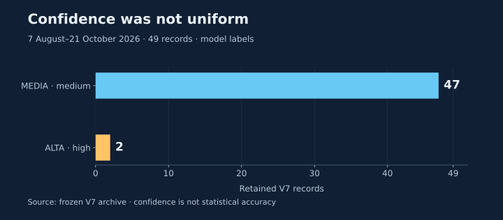
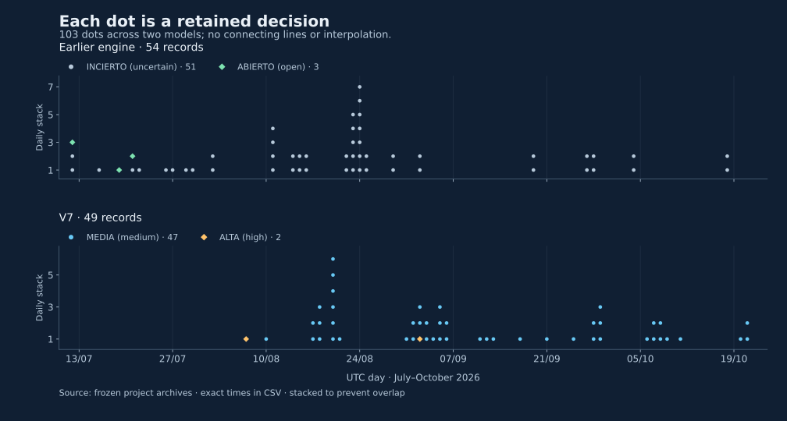

Every row in the V7 archive carries the same label: OPEN_SEVERELY_RESTRICTED, meaning open with severely restricted transit. At first glance, that repetition might look like a story of stability. It does not establish one. Each row preserves an assessment published by the monitor, rather than an independent observation of vessel movements.
That distinction matters when asking what happened at Hormuz. These files let us examine how the retained assessments described the situation and how much confidence the system assigned to them. Establishing how many ships passed would require maritime data that this dataset does not contain.
A monitor record
Stores a timestamp, a classification and a confidence label assigned by the system. Several rows can fall on the same day, while other days have no retained row.
A traffic observation
Needs a measure of activity, such as identified transits during a defined interval, with known coverage and counting rules. Counting publications does not supply that measure.
Two archives that need separate readings
The earlier engine used a different classification scheme from V7. We preserve its original labels rather than translating both models onto a common scale to suggest a trend in traffic.
| Archive | Retained period in 2026 | Records | Stored classifications |
|---|---|---|---|
| Earlier engine | 12 July–18 October | 54 | 51 INCIERTO (uncertain)3 ABIERTO (open) |
| V7 | 7 August–21 October | 49 | 49 OPEN_SEVERELY_RESTRICTED |
Download this table (CSV). Exact first and last timestamps appear in the CSV and reproducible summary. The periods overlap, but the models use different definitions.
One classification, two confidence levels
V7 confidence was not uniform: 47 records are labelled MEDIA (medium) and two ALTA (high). These are categories assigned by the model. They are neither calibrated probabilities of being correct nor evidence that each assessment was checked against actual transits.
Scroll the chart horizontally to keep its labels at a readable size.

| Date and time, UTC | Stored classification |
|---|---|
OPEN_SEVERELY_RESTRICTED | |
OPEN_SEVERELY_RESTRICTED |
Both fall outside the two comparison windows below. Those windows therefore contain only MEDIA records, although the full V7 archive includes two ALTA records.
Make every record visible
Some timestamps are close enough for plotted points to hide one another. Here, records are grouped by UTC day and stacked to prevent overlap. Each symbol still represents one row; its height only separates it from other records on that day. Height does not represent traffic intensity, risk or the duration of a classification.
Scroll across the chart to explore the period. A minimum width keeps points and dates from being compressed.

What equal comparison windows reveal
The comparison uses V7 alone and two consecutive intervals of equal length. This avoids comparing a complete month with an incomplete one. The final boundary follows the last retained archive day, rather than the homepage's latest update time.
| Included dates in 2026 | Records | Days with a row | Confidence |
|---|---|---|---|
| 10–30 September | 11 | 8 of 21 | 11 MEDIA |
| 1–21 October | 10 | 7 of 21 | 10 MEDIA |
Download the comparison and exact boundaries (CSV). All rows in both windows retain the same V7 operational label.
The second window contains one fewer retained publication. That is the finding supported by the count. It does not establish fewer ships, a decline in traffic, greater stability or lower risk. Nor do days without a row prove a service outage: this archive is not a complete log of the system's executions.
Frozen sources and reproduction
The following links identify specific Git versions, rather than files that change with the homepage. The original CSV is preserved without adding rows or correcting labels. Tables and chart positions are derived from that same input.
- Earlier-engine archive, frozen version:
at,statusandconfidencefields. - V7 archive at the same frozen version:
generated_at,stateandconfidence; traffic-field availability is also checked. - Input CSV, permanent link: 103 rows from two models, analysed separately. Local download of the same CSV.
Method, exact boundaries and reproducible files
- Read timezone-aware timestamps, convert to UTC and separate the models. Do not remove or invent rows. Model/timestamp identities must be unique.
- Count classifications and confidence by archive. Include each window's start and exclude its end:
[2026-09-10T00:00:00Z, 2026-10-01T00:00:00Z)and[2026-10-01T00:00:00Z, 2026-10-22T00:00:00Z). - Group symbols by UTC day and assign consecutive positions within each day. Keep original timestamps in the CSV; do not interpolate.
- Run
python reproduce.py --checkto verify derived files, or--writeto regenerate them.python render_charts.pydraws charts from the frozen CSV; dependencies are declared.
Calculation code · Chart code · Sources and hashes · Point-overlap check. These resources belong to the draft and remain outside the public site.
The owner has stated that the counts and comparison windows were checked. That specific verification is not recorded as approval of this new wording, its charts or its publication. Both language versions await final editorial review. Canonical and hreflang metadata identify planned public routes; those routes are not published by this delivery.